A co-creation platform supporting marginalized communities
回饋社會弱勢
公益平台
此專案作品集主要呈現我如何在有限資源下，了解客戶需求、幫助客戶重建設計系統與介面。以及調整自己在專案中的角色，透過Git與工程師協作、溝通，在時限內完成專案。
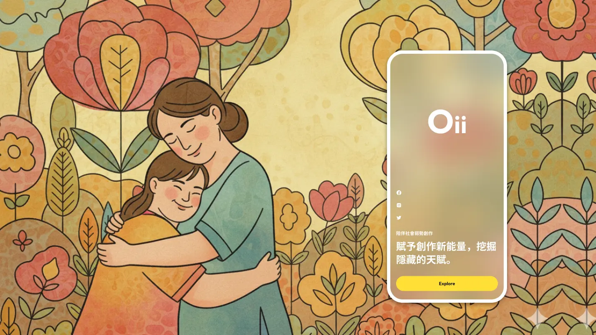
外包專案/老闆朋友
專案簡介
涵蓋前端頁面與後台管理系統。主要功能為購物車、商品上下架管理、會員系統、部落格、投稿與票選活動、學術性社會影響力數值公式建立與圖表呈現。
Figma設計稿由客戶的平面設計師製作提供。
我的角色與貢獻
◢
與客戶溝通使用情境與問題定義，重新規劃使用流程與 UI 版型。
◢
建立設計系統與元件庫，統整視覺風格。
◢
不依賴視覺設計稿，依現有資源靈活調整配合開發，直接進行切版。
◢
透過GIT與工程師協作，推送前端版型供後端開發串接。
◢
.cshtml 頁面結構微調、第三方功能套件樣式調整。
專案成員
UI/UX設計師 X1
全端工程師 X2
隱藏PM X1
基於職業倫理，模糊處理並化名公司和專案名稱，揭示內容為已修改的虛構資料。如欲瞭解更多，歡迎透過人力網站與我聯繫。
客戶混淆的
痛點問題核心
在手機使用成為主流的時代，觸控滑動螢幕，完成行為目的，相當便利且體驗良好。但是，當人們成為這些便利性背後的開發者時，無法正確理解其本質與脈絡:
客戶提供的設計稿為平面設計師製作，規劃書為普通業務建立，不具備開發經驗與專業，導致無法被操作的 ”網頁平面設計” 反覆出現。
-
釐清功能需求、建立操作流程成為重中之重。
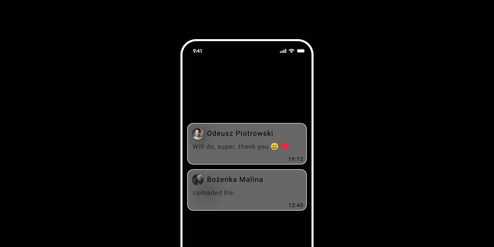
無法被使用的設計
推播訊息功能
推播功能為常見且基礎的功能，在商用平台中，扮演重要角色。使用者感受到的簡單便利，其背後有著嚴謹邏輯與複雜流程設定支撐。

上圖
透過上圖可清楚得知客戶提供的前台設計稿操作邏輯缺失 ，並且無法了解接收對象與任務目標。與客戶溝通過程中反覆出現疑問迴圈:
-
” iPhone 明明就是這樣啊! 為什麼不可以操作? ”
手機便利操作習慣，使客戶混淆了手持式裝置與電腦端的介面操作行為，以及應用程式與響應是網頁的差異。導致客戶將訊息懸浮冒泡，直接設計於響應式網頁。解決問題前，必須先向客戶說明:
-
專案為響應式(RWD)網頁，非手機應用程式(APP)，兩者有本質上的不同，操作者透過瀏覽器進入網頁才能獲得訊息。同時，UI操作必須平衡手持裝置與電腦端用戶的使用情況。
透過溝通了解使用情境
建立解決方案
-
功能依需求而生，是所有開發的核心。
-
我需要了解客戶的使用情境: 有哪些訊息內容，需要發給誰，訊息的推送次數與時間。
我請客戶依據前台功能，以及他們預期會使用到的訊息內容，統整成文字檔案提供。我將文字訊息大致分類如下:
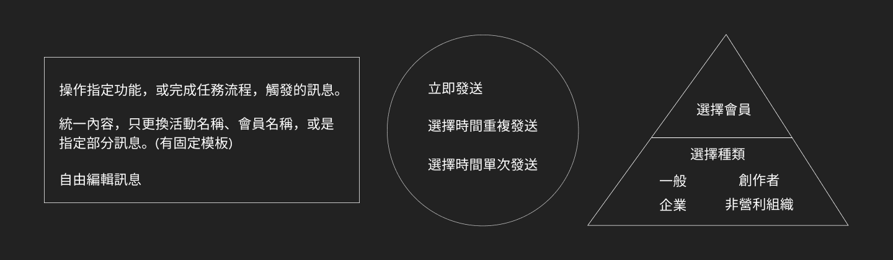
上圖
整理歸納出分類與規則後，為了設定時間的可行性，因此我將預想的方案雛形與工程師討論。
-
與工程師討論，同時也能進一步驗證自己的思維邏輯。
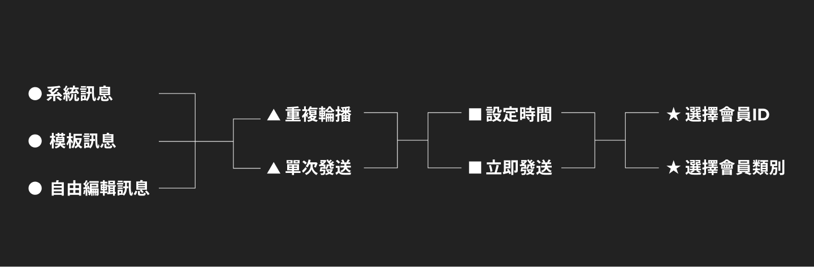
上圖
與工程師討論後，我將內容化為功能邏輯圖如上。各階段(圖形符號)之間屬於相乘，用來完成一項訊息的發送任務，做為 UI 介面配置與開發串接的重要依據。
-
例如: 購物訂單通知 「您的訂單編號: AERD 445389 已成立, 我們將於確認訂單後，盡快為您出貨。詳情可於 會員中心 > 訂單 查詢。」
-
依上圖流程設定為 -- 系統訊息 > 單次發送 > 立即發送 > 選擇會員類別(全部類別)」
邏輯架構圖含類型、模式、時機、對象四層。我主要提出訊息類型、發送時間設定及選擇會員ID等功能邏輯，經討論後，工程師認為將時間設定拆成發送方式與發送時機，加入排程設定、會員類別，可以使功能更完善。
-
●
訊息類型:
將訊息內容依不同來源或形式進行分類。
系統訊息 -
用戶行為觸發後，統一傳送的訊息內容。
模板訊息 -
常用的制式功能訊息，可帶入參數以改動部分目標內容。
自由編輯訊息 -
依據管理者需要，發送自編內容給用戶。
-
▲
每一頁各自放置一個篩選按鈕與對應的側欄
重複輪播 -
固定一個日期區段，區段內每到特定時間點，系統自動進行發送。
單次發送 -
訊息只發送一次，如要再發送需手動發送。
-
■
發送時機:
為了系統的使用彈性提升，加入時間選擇器與排程系 統，使訊息可以在設定時間之後，依照排程送出。(感恩工程師，讚嘆工程 師)
定時發送 -
設定時間後，於指定時間發送。
立即發送 -
訊息內容編輯完成後，直接進行發送。
-
★
對象選擇:
由於會員有四種類，因此將目標選擇方式區分。
選擇會員ID -
可直接選擇單一或多個會員，進行指定發送對象。
選擇會員類別 -
針對某單一類別或負數類別下的全部會員進行發送。
先等等
我們先看看後台
功能之間的各流程環環相扣，前台和後台必須同步梳理操作邏輯。
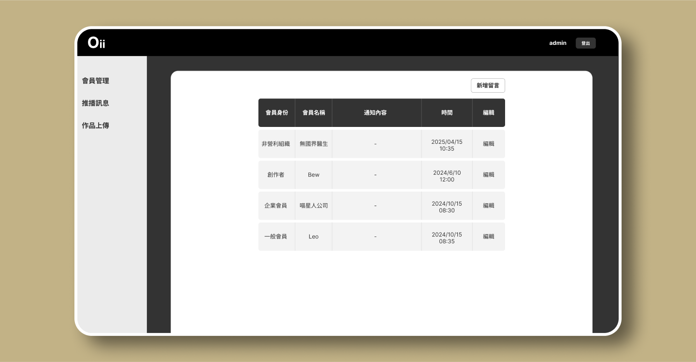
上圖
客戶提供的後台設計稿(上圖)無法完整支撐訊息功能任務，並且缺少發送歷史這項重要功能。 我將功能邏輯圖與客戶溝通，並以客戶提供的訊息內容做文字操作流程示範。
-
依功能邏輯圖示範設定流程:
-
聖誕活動訊息 -- 自由編輯訊息 > 重複發送 > 設定時間 > 選擇會員類別(全部類別)
在溝通過程中，我了解到客戶因現實面需求，流程在可再被簡化。為了操作更加簡單，我將訊息功能入口拆分成兩大類，重複的子功能分開放入其下。

由於客戶在可編輯訊息功能，只需要單次發送，因此自由編輯訊息只需要設定單一時間。在與工程師討論後，系統訊息與模板訊息直接由工程師寫入資料庫，設定觸發方式，滿足客戶節省設定制式訊息的時間。
-
與工程師反覆討論需求功能和操作流程，
-
確立解決方案，再與客戶討論。
我們以此方案 (同時有前台) 向客戶進行溝通，經確認後進入開發，頁面設計由我依照設計系統切版。
進入開發
透過git 即時切版協作
在有限資源下，調整自己的角色，跳脫設計師的框架，協助工程師節省時間。
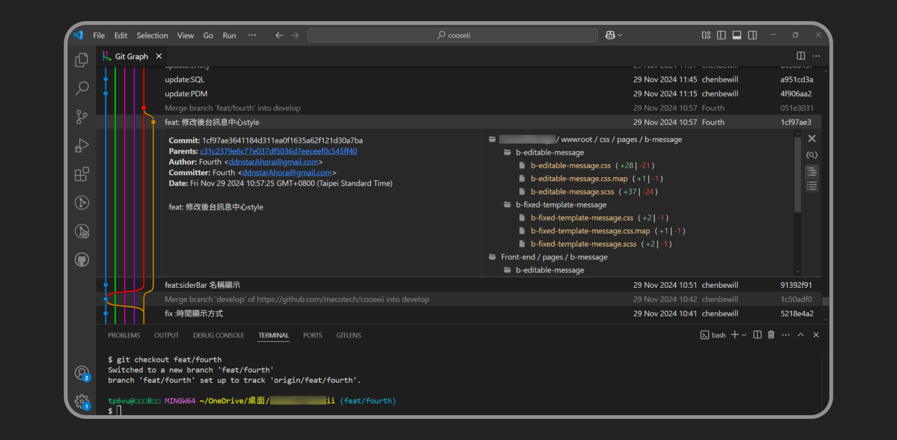
上圖
由於時間有限，不允許我先進行設計UI、設定prototype 的正常流程。經過內部討論，確認需要的功能元件以及需引用的外部套件，開發流程調整為--
-
直接切版推上開發分支，由工程師建立View，引用外部套件功能完成。
-
我於本地環境運行並修改 CSS，將 Select2 樣式客製化為符合系統設計風格。
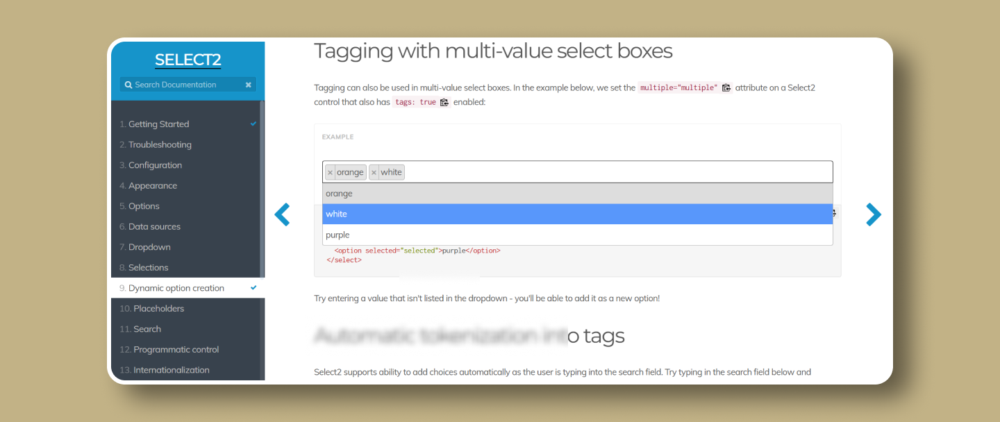
回到原本問題
建立功能到流程優化
在最開始的問題中，客戶誤解操作模式，提供了無法被操作的設計稿。響應式網頁的操作，需要顧及電腦與手持裝置的使用方式。
我先透過蒐集客戶的所有訊息內容，並且完成後台的訊息推播功能。如此可以掌握前台會員中心出現的訊息內容、類型、目的，從而制定前台畫面的呈現方式與功能。
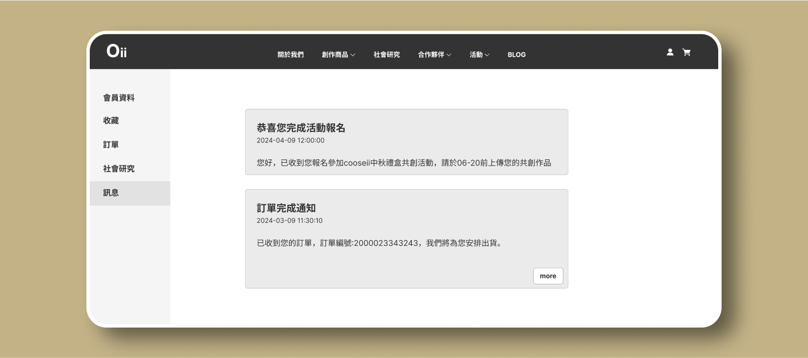
上圖
依據客戶提供的訊息內容，我將前台會員會收到的訊息分類，透過Tab切換種類。以每頁10則訊息為限，下放設計頁碼。每則訊息可展開收合，過時訊息也可由會員自行刪除。
直觀的基礎操作流程，透過與工程師討論，確認此方案先進行開發，待完成後，與後台一起給客戶確認。
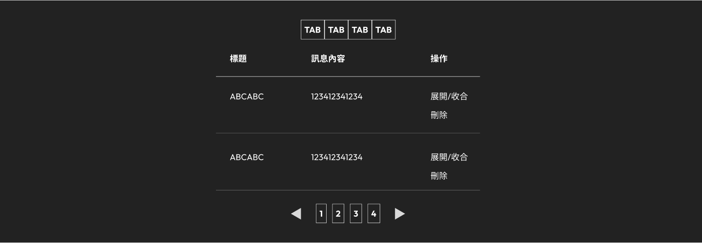
接近收尾的錯誤
損耗開發成本
-
由於專案快進入尾聲，全站功能接近完整，我沒有將訊息中心的前台操作流程提供客戶進行溝通，使團隊損耗開發時間成本。
上圖
在上圖的操作中，前台畫面已具備完整的展開收合、切換、刪除、換頁等基本功能。客戶反饋需求為”希望所有訊息內容不要隱藏，要完整露出內容”。
-
[錯誤核心]
-
開發前未清楚與客戶溝通，確認需求。
如果需求是一台體重計，不要做體脂計。
完成後的比對
前台
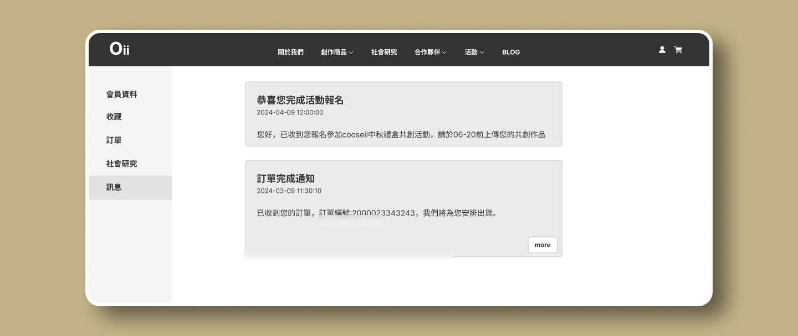
完成後的比對
後台
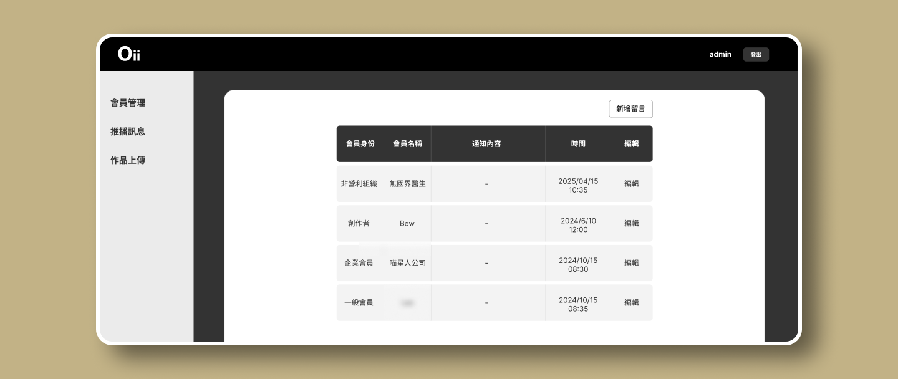
完成專案
與心得總結
在此專案中，平面設計師製作的設計稿問題，使我深刻體會到設計稿是否符合功能邏輯與功能開發需要反覆溝通、需求釐清的重要性。主動協助客戶釐清概念混淆與操作誤解 ，確保能正確掌握功能需求的核心目標，並補足設計稿與規劃文件中未呈現的操作邏輯。
作為部門中唯一的 UI/UX 設計師，我全程掌握專案視覺統整，與操作體驗的品質，不僅將設計轉換為符合響應式規範的網頁介面，避免客戶持續在不同頁面出現超出視覺規範的設計風格。同步與工程師持續討論功能與介面整合的可行性，確保在既有資源與時限內達到最佳使用體驗。
由於協助客戶了解每一個功能與畫面操作邏輯與了解需求，耗費大量時間，指數縮減的時程，使我調整自己的角色與作業模式。我直接在 MVC 架構下，進行切版與後續 CSS 調整。(非常感謝工程師願意讓我進入專案架構直接修改 cshtml 與 CSS) 這種開放式協作方式，讓我們能透過 Git 即時同步版本，後端邏輯可無縫串接，免除反覆傳遞與比對靜態頁面的低效流程，顯著提升交付速度與一致性。這不僅讓我熟悉 Git 的版本控制，深化了與工程師之間的默契與互信，也使我增加設計落地與操作流程驗證的經驗。